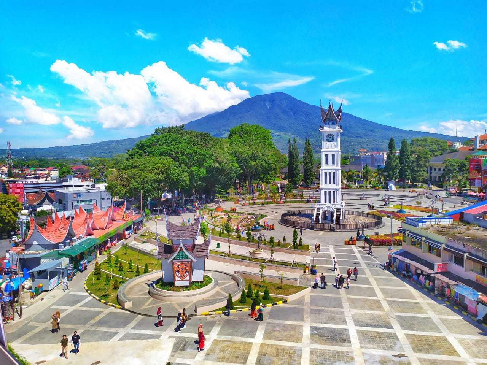

Jam Gadang

Jam Gadang adalah nama untuk menara jam yang terletak di pusat kota Bukittinggi, Sumatera Barat, Indonesia. Menara jam ini memiliki jam dengan ukuran besar di empat sisinya sehingga dinamakan Jam Gadang, sebutan bahasa Minangkabau yang berarti "jam besar".
Selain sebagai pusat penanda kota Bukittinggi, Jam Gadang juga telah dijadikan sebagai objek wisata dengan diperluasnya taman di sekitar menara jam ini. Taman tersebut menjadi ruang interaksi masyarakat baik di hari kerja maupun di hari libur. Acara-acara yang sifatnya umum biasanya diselenggarakan di sekitar taman dekat menara jam ini.
Jam Gadang memiliki denah dasar seluas 13 x 4 meter. Bagian dalam menara jam setinggi 26 meter ini terdiri dari beberapa tingkat, dengan tingkat teratas merupakan tempat penyimpanan bandul. Bandul tersebut sempat patah hingga harus diganti akibat gempapada tahun 2007.